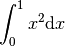

Why MARILib ?¶
Because this is a beautiful library.

Example of Python code:
from numpy import array
print("yo")
MARILib¶
Multidisciplinary Airplane Research Integrated Library
MARILib is a model library developped as a new test case to benchmark optimization algorithms and Multidisciplinary Design Optimization (MDO) formulations.
MARILib’s first objective is to provide models for research on a wide range of aircraft concepts, from business jets to super jumbos, and also some unconventional configurations, through an Overall Aircraft Design (OAD) approach.
The second objective is to share a new benchmark test case for MDO strategies, which does not raise intellectual property issues.
The third objective is to describe a case study for educational and training purposes.
MARILib is distributed under the Cecill C license If you use MARILib for your research, the Cecill C license engages you to cite us :
Druot et al., “A Multidisciplinary Airplane Research Integrated Library With Applications To Partial Turboelectric Propulsion”, AIAA Aviation conference, Dallas 2019
IMPORTANT REMARKS :
The ease of use of MARILib should not overshadow the complexity of Airplane Design where many variables interact in a non-linear way.
The purpose of MARILib is not to deliver accurate airplane assessment but rather good order of magnitude of airplane characteristics.
If unexpected or surprising results are achieved, please, keep in mind initializing functions are taking big assumptions to be able to run the process, check the proposed values and do not hesitate to input your own guesses.